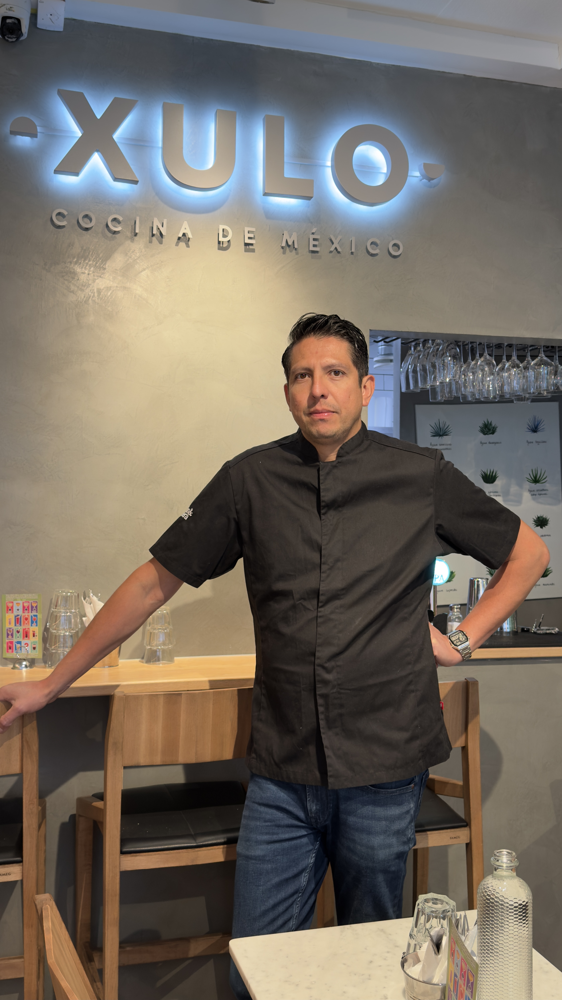

Sedan 2021
Välkommen till Xulo
Från Guadalajara till Stockholm
Jonathan öppnade sin första taquería i Guadalajara när han var 17 år. Sedan dess har han drivit restauranger i Mexikanska Karibien, träffat sin svenska fru, och flyttat till Stockholm med en dröm – att dela äkta mexikansk matkultur med Sverige.
På bara 17 dagar byggde han Xulo med egna händer. Allt lagas från grunden varje dag, inklusive handgjorda majstortillas. Menyn är hans familjs historia på en tallrik.
Läs Vår Historia